Erreurs
Il existe deux types d'erreurs qui peuvent vous arriver : des avertissements jaunes et des alertes rouges. Vous allez voir ces avertissements et alertes dans la colonne à gauche de votre fenêtre Xcode.
Des avertissements jaunes n'entraînent pas l'échec de construction, ce sont simplement des avertissements. Parfois, une version de Loop peut avoir des petites divergences qui entraînent ces avertissements jaunes. Ignorez-les. N'essayez pas de les résoudre. Laissez-les.
Des alertes rouges doivent être résolues avant de continuer. Les étapes ci-dessous vont vous expliquer comment les résoudre selon le type d'alerte que vous voyez.
Commencez par les causes communes
Avant d'essayer de résoudre ces alertes rouges, commençons par les causes les plus communes :
1) N'utilisez pas de version beta. Si vous utilisez une version beta de iOS ou de Xcode, votre application Loop ne va pas aboutir. Si vous avez Xcode beta, veuillez le désinstaller et télécharger la version normale. Si vous avez iOS beta sur votre iPhone, vous devez restaurer votre iPhone entièrement. Vous pouvez restaurer votre iPhone à (1) la dernière sauvegarde non-beta que vous avez fait ou (2) restaurer comme un nouvel iPhone (réglages défauts). Oui, supprimer la version beta de iOS est pénible... donc ne l'installez pas.
2) Avez-vous vérifié vos mis-à-jours ?
Versions minimums Si vous utilisez le code pour Omnipod Loop, Loop dev, ou avez iOS 12.2 installé, veuillez vérifier que vous avec macOS 10.14.3 (Mojave) et Xcode 10.2 ou version ultérieure. Vous n'allez pas pouvoir monter votre application Loop sans ces versions.
3) Téléchargez une nouvelle copie du code de Loop, n'utilisez pas un téléchargement ancien que vous avez monté il y a longtemps. Il se peut que cette version ne soit pas compatible avec les versions iOS et Xcode que vous avez.
4) Si vous avez u compte de développer gratuit, il faut finir les personnalisations du code pour enlever la capacité Siri.
Demandez de l'aide
ARRÊTEZ ! Lisez cette section ! Important !
Avant de publier dans Zulipchat ou Looped demandant de l'aide, faites votre travail d'abord. Les erreurs énuméré ci-dessous (et les erreurs communes ci-dessus) ont beaucoup de succès SI ON UTILISE CETTE PAGE. Les bénévoles dans le group qui répondent aux questions dans Looped ou Zulipchat aimeraient bien passer plus de temps pour améliorer Loop dans autres secteurs au lieu de répondre aux questions qui ont leurs réponses sur cette page.
Par conséquent, utilisez cette liste d'erreurs en essayant de trouver la solution tout(e) seul(e). Après, si vous devez demander de l'aide car cette page ne contient pas la solution de votre soucis, vous devez aussi inclure l'information pertinente avec votre publication pour que nous (les bénévoles) savons que vous aviez lu cette page et là où vous êtes dans le processus.
Veuillez inclure dans votre publication : * La version de Xcode que vous utilisez
La version de Loop que vous utilisez
La version de iOS sur votre iPhone
Précisez si vous utilisez un compte de développeur gratuit ou payant. Confirmez que vous avez supprimé les capacités Siri.
Confirmez que vous n'utilisez pas Xcode beta ou iOS beta (pour que l'on évite de vous demander, veuillez dire "je n'utilise pas de version beta"... cela gagnera beaucoup de temps)
Des capteurs d'écrans de TOUTE la fenêtre de Xcode et / ou Terminal montrant votre erreur et tout message que vous avez vus en travaillant sur les erreurs et leur(s) solution(s)
Une liste d'étapes que vous avez déjà pris
Astuce n° 1 : maj + cmd + 4 va vous donner un outil de capture d'écran que vous pouvez manipuler en cliquant et glissant pour sélectionner l'endroit que vous voulez prendre en photo. Quand vous lâchez le souris, la capture d'écran sera sauvegarder automatiquement sur votre bureau. Des photos de votre écran prises par votre téléphone ne suffiront pas, elles sont souvent peu lisibles.
Astuce n° 2 : quand vous prenez des captures d'écran pour une publication, veuillez inclure toute la fenêtre de Xcode. Ne focaliser pas sur un seul endroit. Il y a de l'information dans chaque partie de la fenêtre, ce qui aide les bénévoles énormément.
Trouver vos messages d’erreur
Pour commencer (en considérant que vous n’aviez pas rencontré l’un des problèmes trouvés ci-dessus), il faut (1) LIRE LES MESSAGES D’ERREURS et ensuite TROUVER VOTRE MESSAGE D’ERREUR CI-DESSOUS.
Astuce : lisant simplement "exit code" dans Xcode ne suffit pas pour discerner la véritable erreur. Regardez le message en détail pour mieux aider vos recherches de solution.
Vous allez remarquer dans les photos ci-dessous qu’il y a des cercles rouges autour des messages d’erreur. Lisez attentivement Xcode puis regardez dans les exemples pour trouver l’erreur qui correspond. Une fois votre message trouvé (pas juste "exit code"), vous pouvez soit :
• Prenez le message d’erreur de votre Xcode et utiliser la fonction de recherche de cette site pour entrer votre message et trouver la solution qui correspond
• Prenez le message d’erreur de votre Xcode et lisez chaque exemple ci-dessous. Vérifiez chaque cercle rouge pour voir si c’est la même erreur.
Par exemple, si vous voyez "Invalid active developer path (/Library/Developer/CommandLineTools)" dans votre message d’erreur, utilisez la fonction de recherche de ce site en cherchant simplement "Invalid active". Vous allez trouver quelques liens dont un est la solution de Command Line Tools pour cette erreur. Cliquez sur le lien et vous trouverez votre solution.
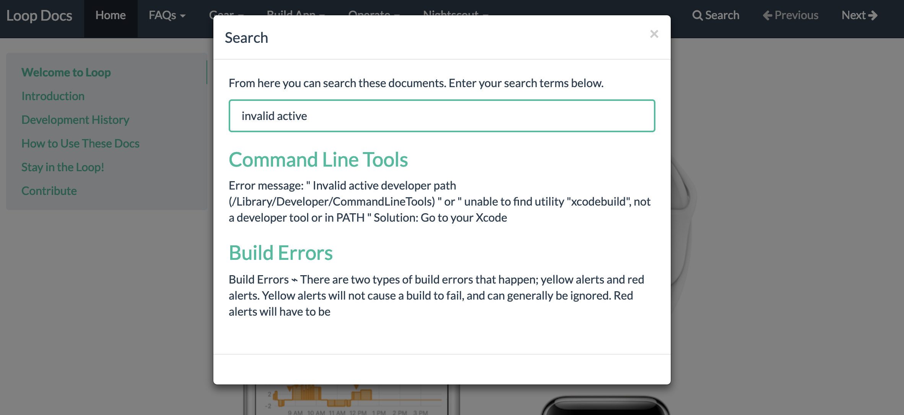
No such module ‘LoopKit’
Si vous voyez une Cartfile failure et plusieurs autres erreurs rouges (notamment une erreur disant "No such module ‘LoopKit’"), cliquez deux fois sur le message d’erreur. Si Xcode vous dit que l’échec du montage est présent dans l’un des schèmes comme affiché ci-dessous, alors vous devez ouvrir l’application Terminal et utiliser la commande :
cd ~/downloads/loop-master && carthage update. ATTENTION : VOUS ALLEZ PEUT-ÊTRE DEVOIR CHANGER LA COMMANDE. Si votre fichier Loop n’est pas placé dans Téléchargements ou se nomme différemment, vous devez changer la commande. Par exemple, si votre fichier se trouve sur le bureau de votre ordinateur, la commande serait cd ~/desktop/loop-master && carthage update. Ou si votre fichier se trouve bien dans les Téléchargements mais se nomme "loop-dev", ce serait cd ~/downloads/loop-dev && carthage update ». Donc, si votre fichier s’appelle loop-dev et se trouve sur le bureau, ce seraitcd ~/desktop/loop-dev && carthage update`. Veuillez faire très attention à ceci.
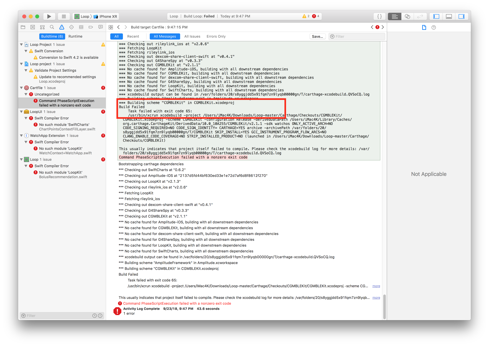
Un Carthage update prend environ 15 – 25 minutes. Un Carthage update qui se termine avec succès s’affichera comme ci-dessous :
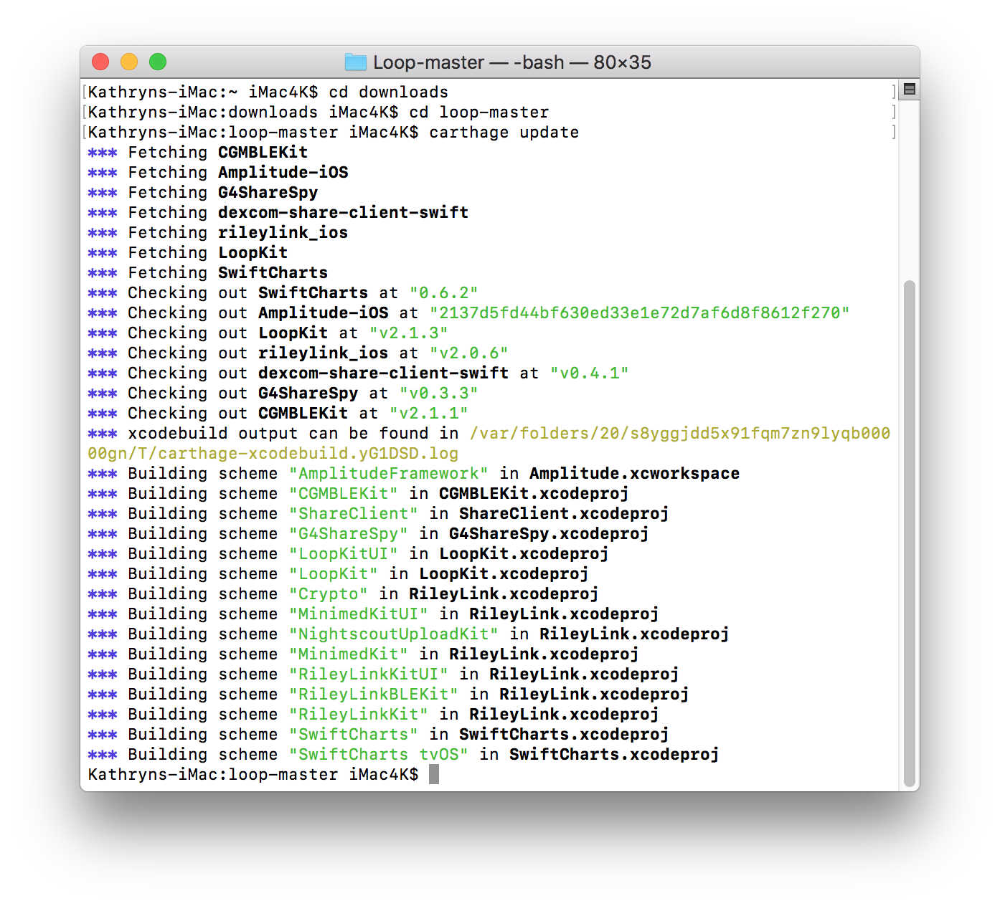
Une fois le carthage update fini, vous pouvez retourner dans Xcode et cliquez sur le bouton "play". Votre projet devrait monter avec succès.
So votre carthage update échoue, essayez d’ouvrir l’application Terminal et d’entrer ces commandes pour vider le cache et derived data dans Xcode :
rm -rf ~/Library/Caches/org.carthage.CarthageKit
rm -rf ~/Library/Developer/Xcode/DerivedData
Après avoir entré ces commandes, réessayez la commande :
cd ~/downloads/loop-master && carthage update
En vous souvenant de modifier la commande si besoin.
Version de Carthage obsolète
Si vous voyez le message "Please update to the latest Carthage version", ouvrez Terminal et entrez cette commande :
brew update && brew upgrade carthage
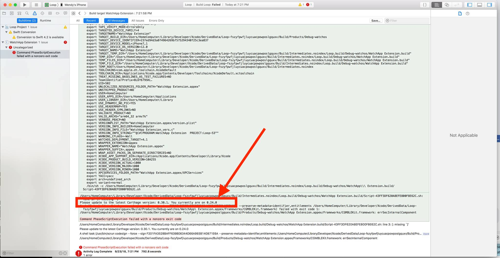
Ne pas avoir utilisé la bonne version de Xcode
Le message d’erreur changerait dans le temps et avec chaque version de Xcode. Si vous utilisez iOS 12.2 ou la branche Omnipod-testing et n’avez pas mis à jour macOS 10.14.3 et Xcode 10.2 minimum, vous allez voir ce genre d’erreurs quand vous essayez de monter Loop :
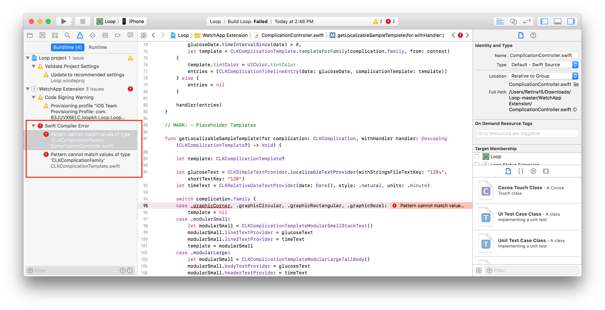
Solution : mettre à jour macOS puis utilisez l’App Store sur votre ordinateur pour mettre à jour Xcode.
Command Line Tools
Message d’erreur : Invalid active developer path (/Library/Developer/CommandLineTools)" ou "unable to find utility "xcodebuild", not a developer tool or in PATH"
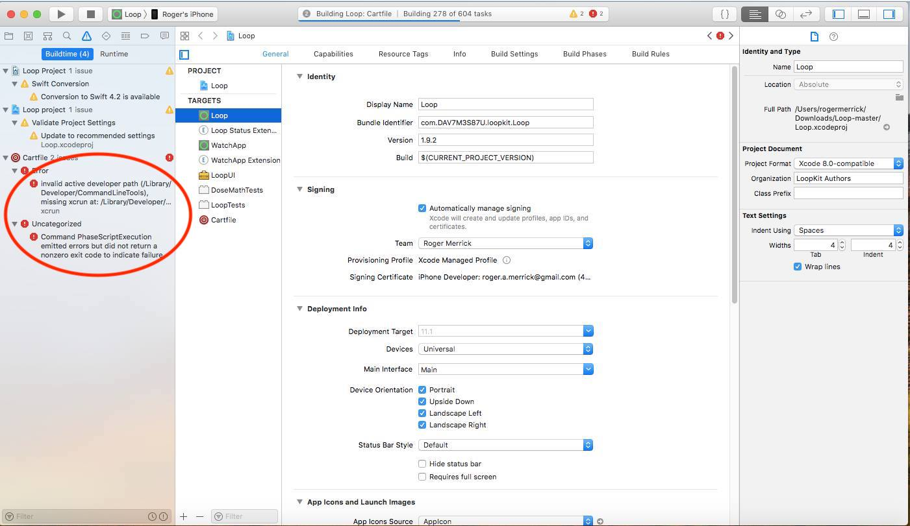
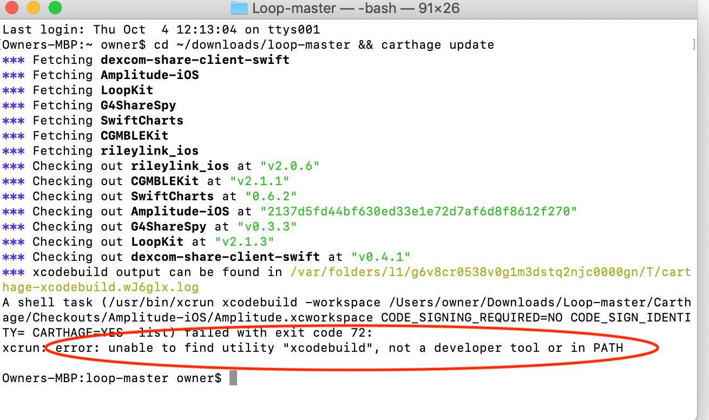
Solution : Allez dans Xcode > Preferences > Locations > Command Line Tools. Choisissez la version qui corresponde à votre version de Xcode (exemple, 10.2 ou 11).
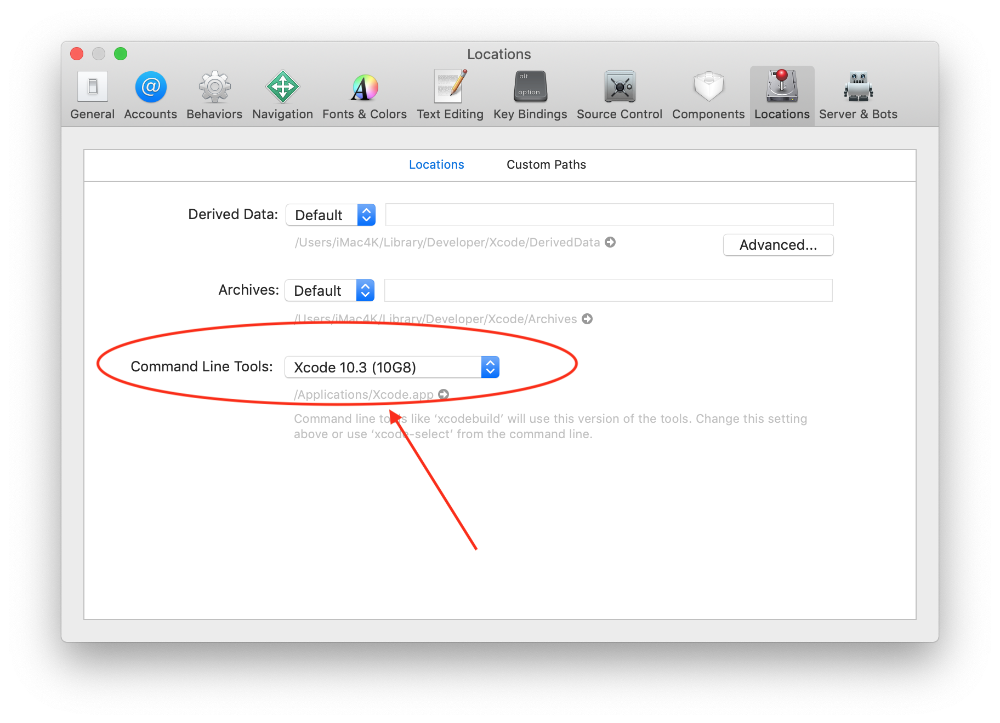
Pending Certificate Request
Si vous voyez un message disant "You already have a current iOS Development certificate or a pending certificate request." comme ci-dessous :
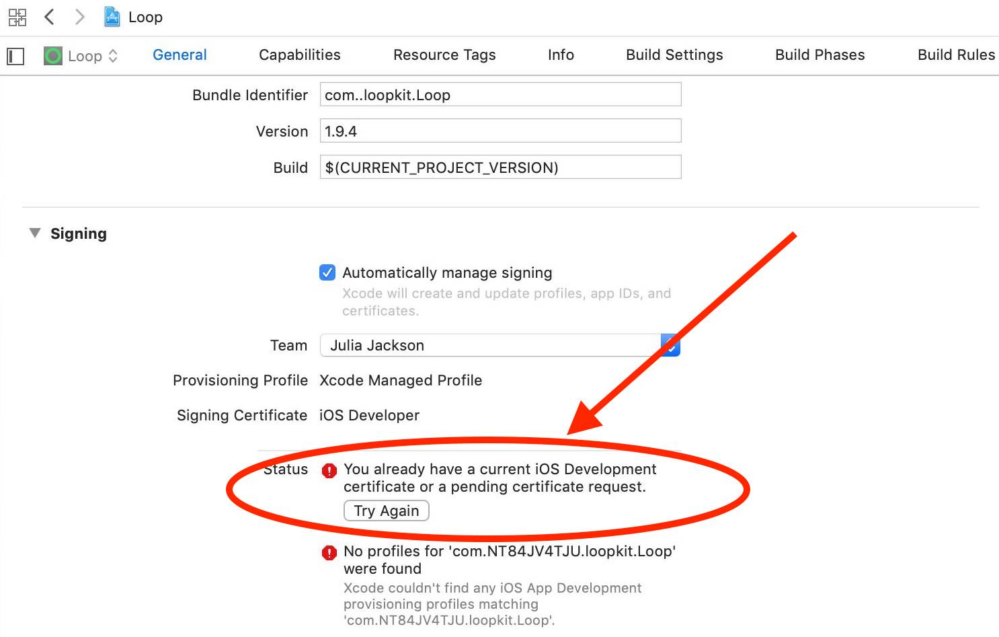
La solution est d’aller sur votre compte de développeur Apple (ici)[ https://developer.apple.com/] puis cliquez sur "Certificates, Identifiers & Profiles". Sur cette page, vous allez voir "Development" sous la section "Certificates" dans la colonne à gauche. Vous allez devoir cliquer sur les certificats, et choisir "revoke" depuis le menu qui s’affichera. Confirmez votre choix quand la fenêtre "Do you want to revoke the certificate ?" s’affiche.
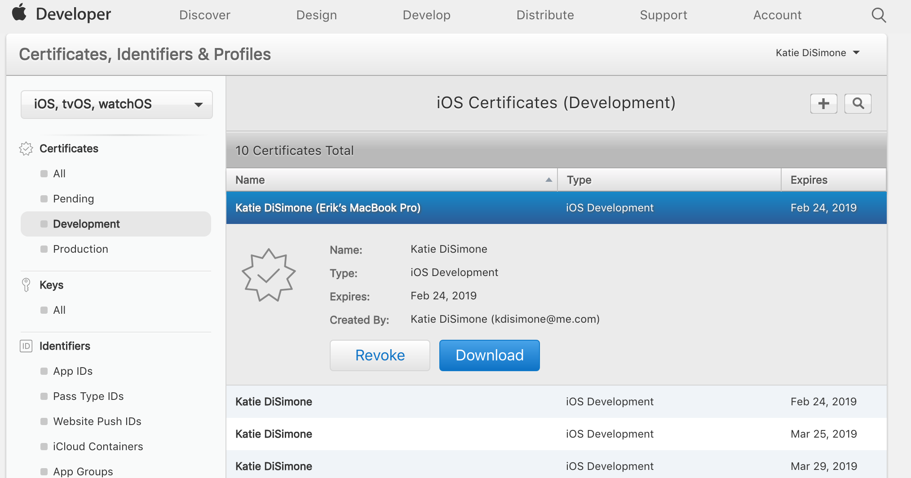
Après avoir fait ceci, revenez dans Xcode et ouvrir Preferences. Sous la section Accounts, cliquez sur le - pour supprimer votre Apple ID.
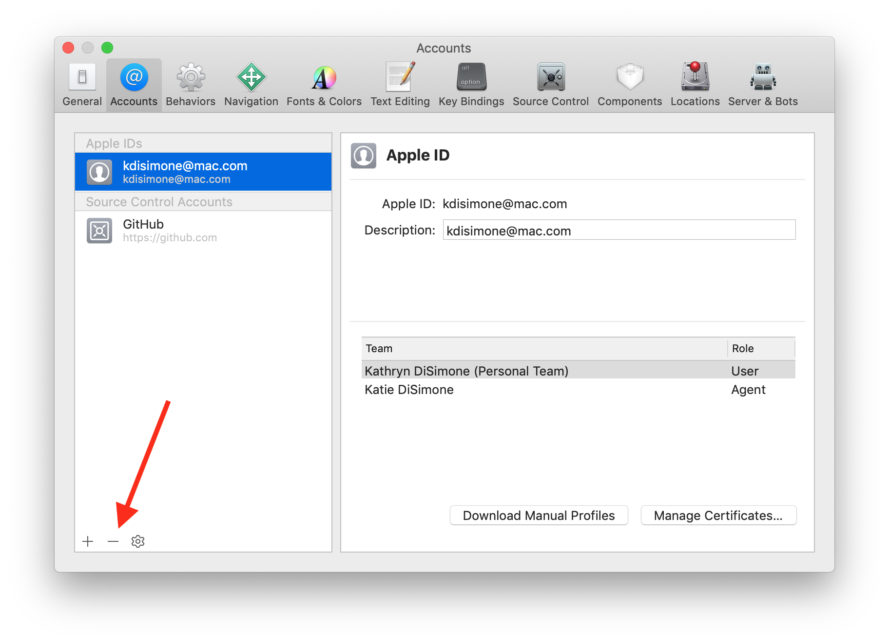
Entrez à nouveau votre Apple ID (et oui… ajouter le compte que vous venez de supprimer), revenir à Loop signing dans Xcode et votre message d’erreur, normalement, sera résolu.
Pour être double sûr(e), vous pouvez vérifier que les iOS development certificates sont tous bien en place en cliquant sur "Manage Certificates" dans les préférences de Xcode sous la partie Accounts. Vous devez en avoir un pour chaque compte qui a un statut valide comme ci-dessous :
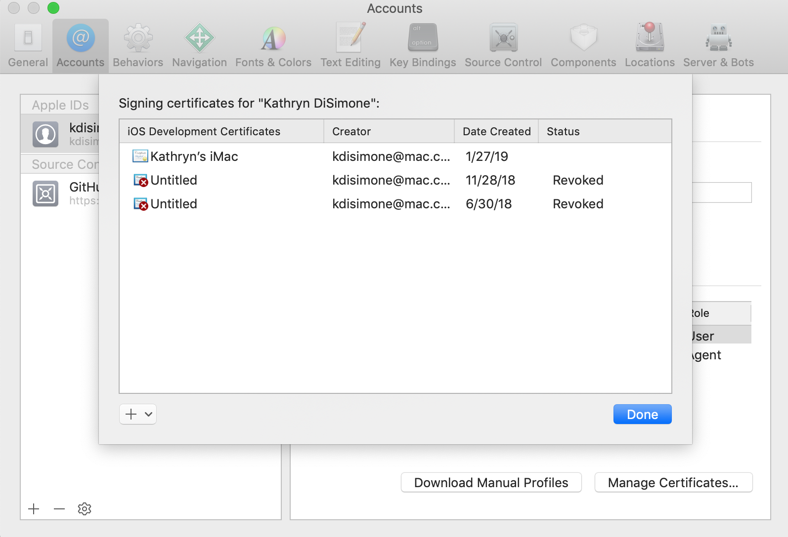
Command CodeSign failed
Message d’erreur : "errSecInternalComponent, Command CodeSign failed with a nonzero exit code"
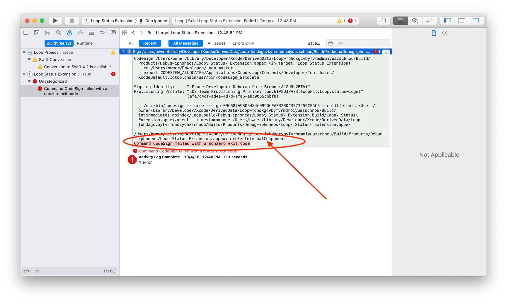
Solution : cette message est probablement dû au fait d’involontairement cliquant sur "No" dans l’étape de Trousseau d’accès, ou en changeant le mot de passe de votre ordinateur. La solution est :
1) Fermez Xcode
2) Ouvrir l’application de Trousseau d’accès de votre ordinateur
3) En haut à gauche, veuillez vérifier que vous avez l’option login sélectionnée puis cliquez-droite sur la serrure à côté du login. Cliquez encore la serrure pour la fermer, puis cliquez encore une fois pour la rouvrir. Votre ordinateur va demander votre mot de passe. Entrez votre mot de passe d’ordinateur. Fermez l’application Troussez d’accès.
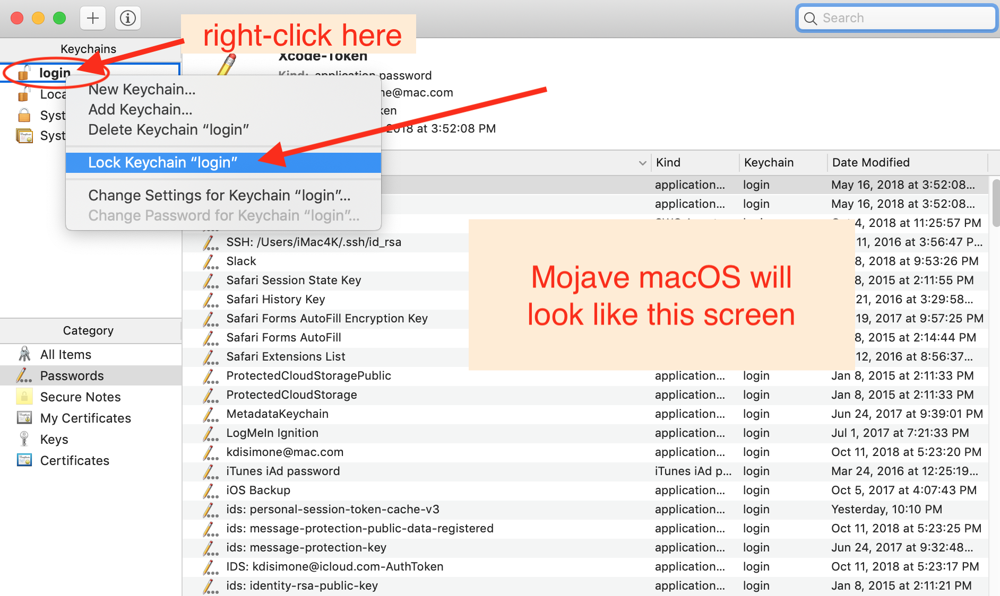
1) Rouvrez votre projet Loop dans Xcode.
2) Dans le menu principale de Xcode (barre grise tout en haut de votre ordinateur), sélectionnez le mot Product puis sélectionnez Clean Build Folder.
3) Réessayez de monter votre application Loop. Si votre ordinateur redemande de permettre l’accès au Trousseau, veuillez sélectionner "Toujours".
Mise à jour du licence de développeur
Message d’erreur : "The Apple Developer Program License Agreement has been updated, In order to access certain membership resources, you must accept the latest license agreement."
Solution : veuillez (accèderez à votre compte de développeur)[ https://developer.apple.com/account/] et accepter à nouveau les conditions.
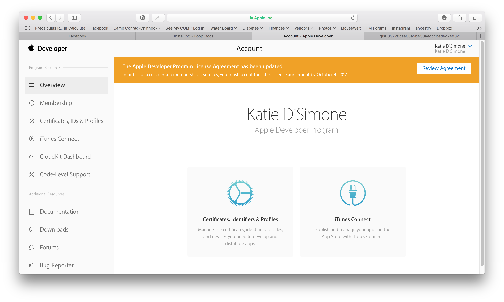
Unrecognized arguments : —cache-builds
Message d’erreur : "Unrecognized arguments: --cache-builds"
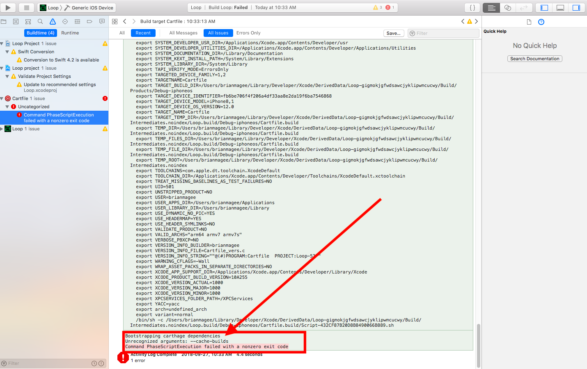
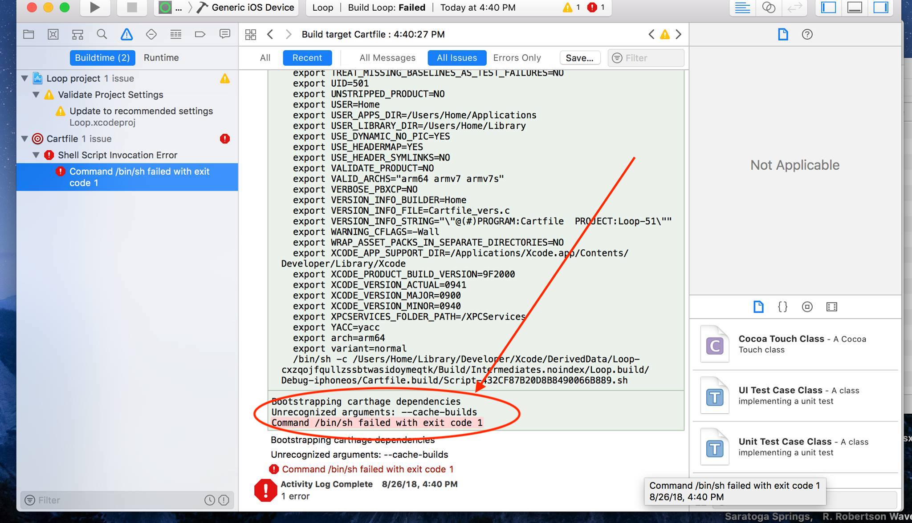
Solution : veuillez ouvrir votre application Terminal et entrez :
/usr/bin/ruby -e "$(curl -fsSL https://raw.githubusercontent.com/Homebrew/install/master/install)"
Confirmez l’installation en appuyant sur la touche "retour" et tapez votre mot de passe d’ordinateur. Quand l’installation se termine, utilisez la commende brew link —overwrite carthage. Après ces deux étapes, vous pouvez fermer Terminal, revenir à Xcode, et cliquez sur r »play » à nouveau.
Abord with Payload
Message d’erreur : Abort with payload. Votre application va ouvrir brièvement avec un écran blanc puis va fermer immédiatement si vous continuez sans résoudre cette erreur.
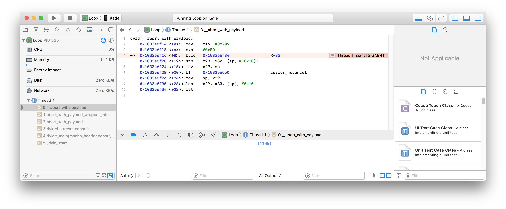
Solution : cette erreur a pour cause
1) Le fichier Loop se trouve sur iCloud Drive 2) Le fichier Loop contient une espace dans le nom
Renommez le fichier pour qu’il n’ait pas d’espace et / ou déplacez-le pour qu’il soit plus sur iCloud Drive.
Apple Watch : l’application ne s’affiche pas
Il y a deux causes possibles. Soit :
1) Votre watchOS n’est pas à jour. Veuillez le mettre à jour avant de continuer.
2) Votre Watch n’était pas lié au moment de la construction de l’application.
N’oubliez pas d’ouvrir l’application Watch, puis sélectionnez "Ma Watch" en bas à gauche, allez tout en bas de cette page et sélectionnez Installer pour l’application Loop dans la liste des applications disponibles.
Apple Watch : l’application de s’installe pas
Si l’application s’affiche sur la liste des applications disponibles mais en appuyant sur "installer" l’animation du cercle commence mais affiche à nouveau l’option de l’installer, veuillez brancher votre iPhone à l’ordinateur et ouvrir Xcode. Sur votre Watch, cherchez pour l’option de "Trust this computer". Allez en bas de l’écran de la Watch et cliquez sur "Trust" (ou "faire confiance").
Maintenant il faut effectuer une étape de plus avant de reconstruire l’application. Allez dans la barre menu de Xcode et sélectionnez "Clean Build Folder" dans le menu "Product". Construire votre application Loop à nouveau.